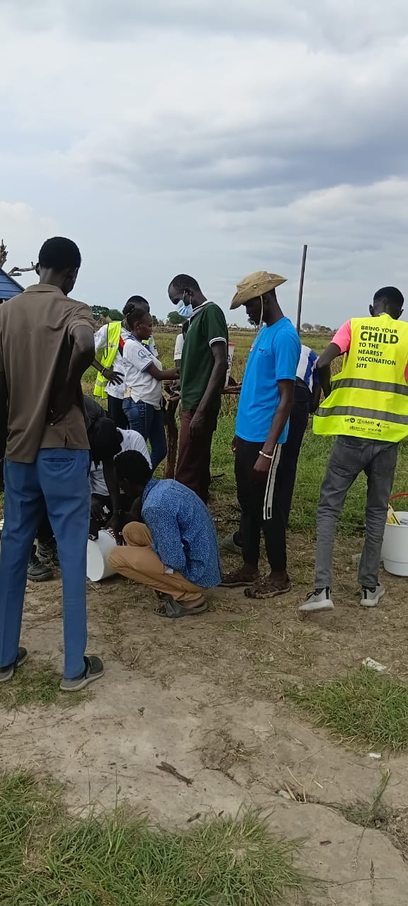
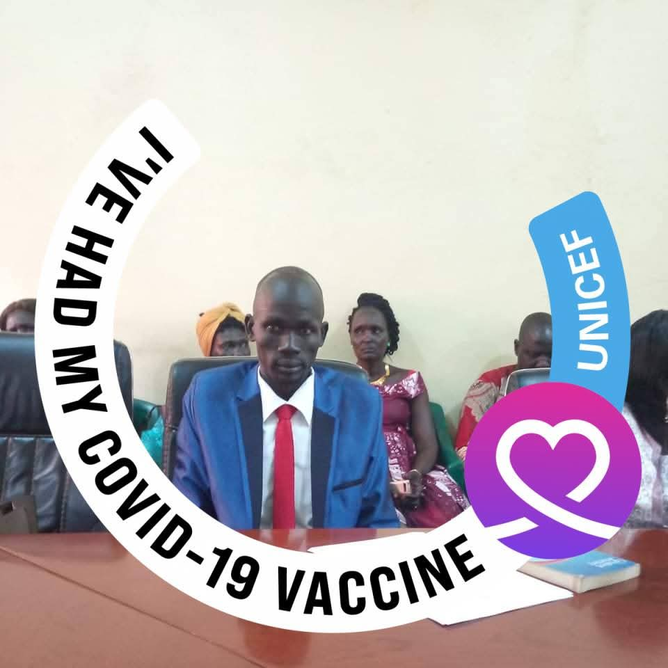
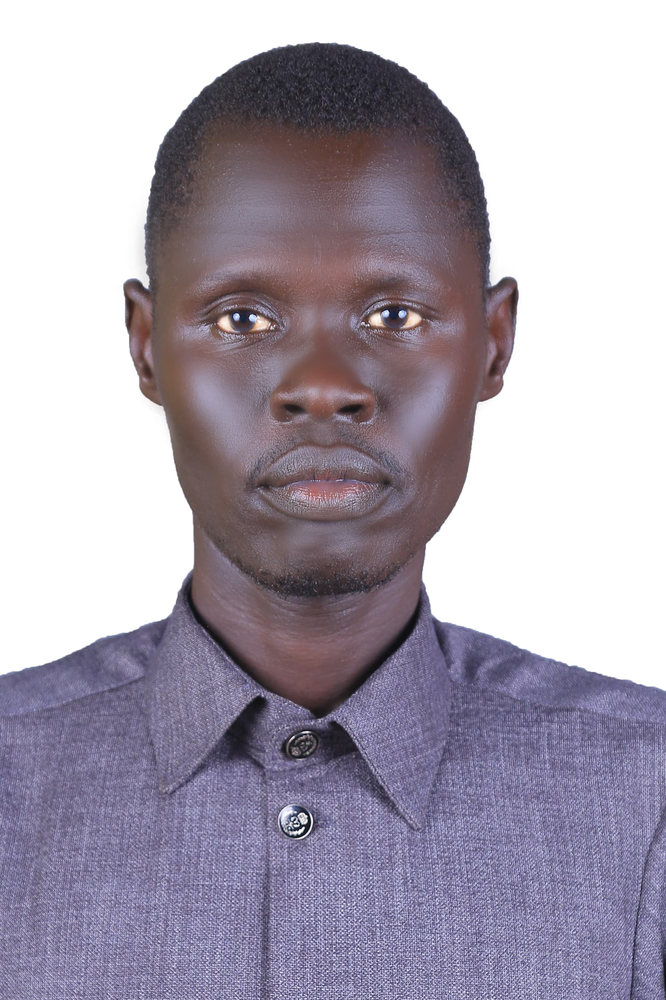
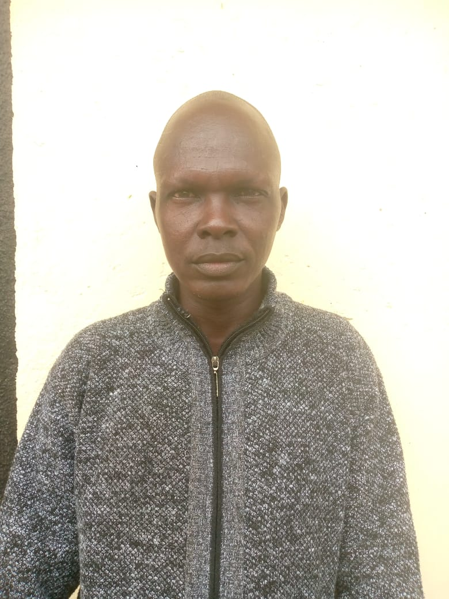

CCMO bridges the gap between national peace agreements and grassroots realities — empowering communities across South Sudan since 2022.
In 2022, a group of South Sudanese peacebuilders, educators, and community advocates came together with a shared conviction: that peace agreements signed in capitals only matter if they reach the communities torn apart by conflict. CCMO was founded to be that bridge.
South Sudan has experienced cycles of violence that national-level agreements have struggled to address at the grassroots. Inter-communal conflicts over resources, cattle raiding, revenge killings, and the devastating impacts of climate change continue to fracture communities — even when formal peace processes are underway.
CCMO was established to work directly within these communities. We facilitate peace dialogues, deliver quality education, drill boreholes for clean water, support survivors of gender-based violence, and build the infrastructure that communities need to recover and thrive. Our integrated approach recognizes that peace, education, clean water, and livelihoods are interconnected — you cannot have lasting peace without dignity, and you cannot have dignity without access to the most fundamental resources.
Since our founding, we have grown from a small team in Juba to operating across 7 states, reaching over 120 communities, and touching more than 15,000 lives. Our work is grounded in the belief that communities themselves hold the solutions — our role is to support, facilitate, and amplify.

A peaceful, self-reliant South Sudan where all communities have equitable access to education, clean water, justice, and economic opportunity — and where conflicts are resolved through dialogue, not violence.
To mitigate conflict, promote human rights, and support sustainable development through integrated peacebuilding, education, WASH, and livelihood programs — empowering communities to build lasting peace from within.
Every decision, every program, every partnership is grounded in these seven core values.
We act with honesty, transparency, and ethical rigor in all our operations and relationships.
We hold ourselves responsible to the communities we serve, our partners, and our donors — with measurable results.
We ensure women, youth, people with disabilities, and marginalized groups are represented in all our work.
Our finances, decision-making, and program outcomes are open to scrutiny by all stakeholders.
We honor the dignity, culture, and knowledge of every community we work alongside.
Programs are designed with communities, not for them — ensuring sustainability and local leadership.
We advocate for the fundamental rights of all people — especially the most vulnerable — in every aspect of our work.
Our strategic objectives guide every program and partnership.
Mitigate inter-communal conflict through dialogue, mediation, and peace education across all 7 states of operation.
Increase access to quality primary education and adult literacy — with a focus on girls and marginalized children.
Improve access to safe drinking water, sanitation facilities, and hygiene education in underserved communities.
Protect human rights and respond to gender-based violence through awareness, safe spaces, and psychosocial support.
Strengthen livelihoods through agricultural training, cash-for-work programs, and income-generating activities.
Build community infrastructure — schools, health posts, water points, and roads — that supports long-term resilience.
Our integrated model ensures that peacebuilding, education, and development reinforce each other for lasting impact.
Understanding needs, mapping stakeholders, and building trust.
Facilitating safe spaces for conflict resolution and consensus-building.
Delivering quality learning — from primary schools to adult literacy.
Clean water, sanitation, and hygiene for health and dignity.
Building economic resilience through skills, agriculture, and cash-for-work.
Sustained recovery, community ownership, and lasting peace.
CCMO was founded in 2022 by three dedicated South Sudanese leaders — each bringing a unique skill set to our shared vision of peace, education, and community‑led development.

Lam is one of the three founders of CCMO, having established the organization in 2022 alongside Gatmai James Gai and David Gatwal Lipjok. As Executive Director, he provides the strategic vision and leadership that guides all operations, drawing on extensive experience in community peacebuilding and organizational development.

Gatmai is a founder of CCMO, launching the organization in 2022 together with Lam Wal wich and David Gatwal Lipjok. In his role as Program Coordinator, he designs, implements, and monitors our integrated peacebuilding, education, WASH, and livelihoods programs across all states, ensuring they deliver real, measurable impact.

David is a founder of CCMO, having built the organization from the ground up in 2022 with Lam Wal wich and Gatmai James Gai. As Finance Manager, he oversees all financial operations with a steadfast commitment to transparency, donor compliance, and maximizing every resource for the communities we serve.
CCMO is a fully registered NGO operating across South Sudan.
CCMO collaborates with a wide range of partners to maximize our reach and effectiveness.
Whether you want to donate, partner, or volunteer — there's a place for you in this mission.